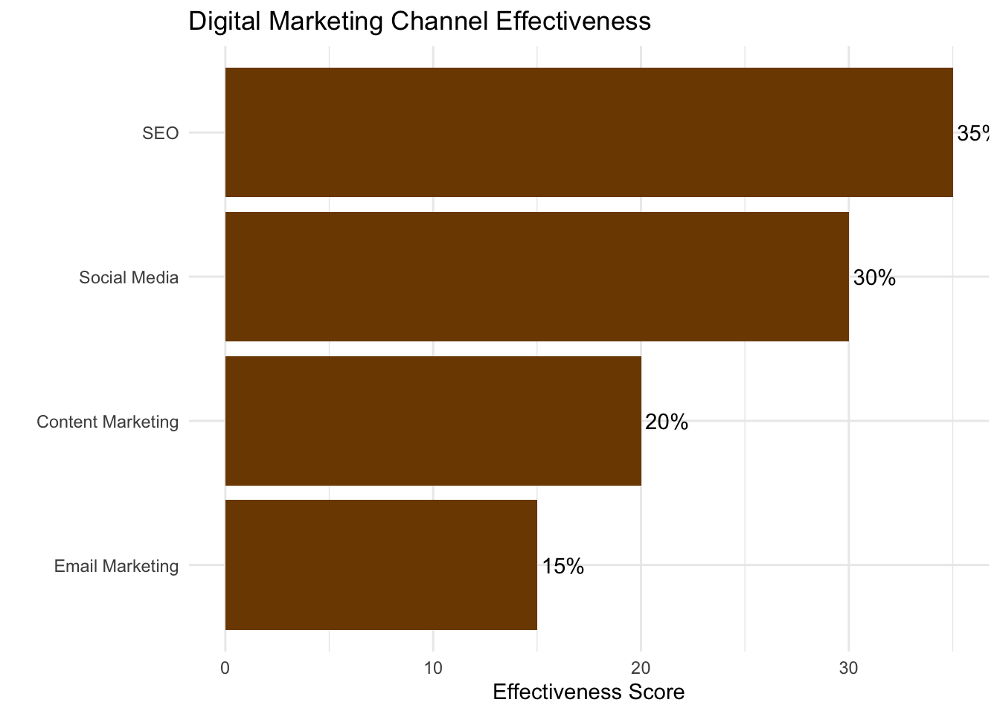
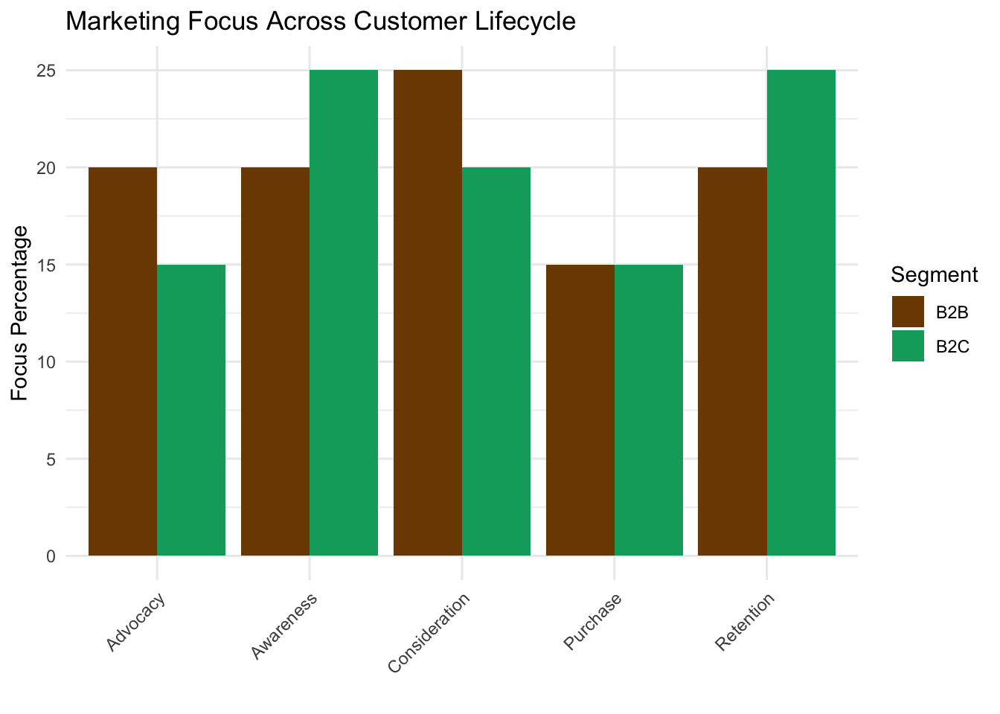

Marketing Strategy
RwandaMarket’s marketing strategy is designed to establish our brand as the premier destination for authentic Rwandan products in Nairobi, while also positioning us as a leader in cross-border trade facilitation.
Branding Strategy
Brand Personality
- Authentic
- Innovative
- Culturally rich
- Technologically advanced
Visual Identity
- Colors: Warm earth tones reminiscent of Rwandan landscapes
- Logo: A stylized fusion of a traditional Rwandan basket and a digital circuit board
- Typography: A blend of classic and modern fonts to represent our bridge between tradition and innovation
Digital Marketing Plan
1. Search Engine Optimization (SEO)
- Keyword optimization for both B2C products and B2B services
- Local SEO targeting Nairobi and surrounding areas
- Regular blog content on Rwandan culture, products, and trade insights
3. Content Marketing
- Blog posts on Rwandan culture, artisan profiles, and trade insights
- Video content: Product demonstrations, artisan interviews, trade facilitation process explanations
- Downloadable guides on East African trade regulations and market entry strategies
4. Email Marketing
- Segmented email lists for B2C and B2B customers
- Personalized product recommendations based on browsing and purchase history
- Regular newsletters with new product announcements, trade insights, and special offers
Offline Marketing Initiatives
1. Pop-up Stores and Events
- Temporary installations in high-traffic areas of Nairobi
- Participation in local cultural events and festivals
2. Partnerships
- Collaborations with Kenyan influencers and tastemakers
- Partnerships with hotels and tourism agencies to reach expatriates and tourists
3. Print Advertising
- Targeted ads in local lifestyle magazines and business publications
- Outdoor advertising in strategic Nairobi locations
4. Trade Shows and Exhibitions
- Participation in East African trade fairs
- Hosting of Rwandan cultural showcase events
Customer Acquisition Strategies
- Referral program with rewards for both referrer and new customer
- Limited-time discounts for first-time purchases
- Free workshops and events to attract potential customers
- Targeted advertising to expat communities and tourist groups
Customer Retention Strategies
- Loyalty program with points system and exclusive benefits
- Personalized shopping experiences based on purchase history
- Regular customer appreciation events
- Exclusive early access to new products for loyal customers
B2B Marketing Strategies
- Thought leadership content on East African trade and market trends
- Webinars and workshops on cross-border trade optimization
- Case studies showcasing successful B2B engagements
- Networking events for businesses interested in East African trade

This comprehensive marketing strategy is designed to build brand awareness, drive customer acquisition, and foster long-term loyalty for both our B2C and B2B offerings. By leveraging a mix of digital and traditional marketing channels, we aim to establish RwandaMarket as the go-to platform for Rwandan products and East African trade facilitation.
2. Social Media Marketing